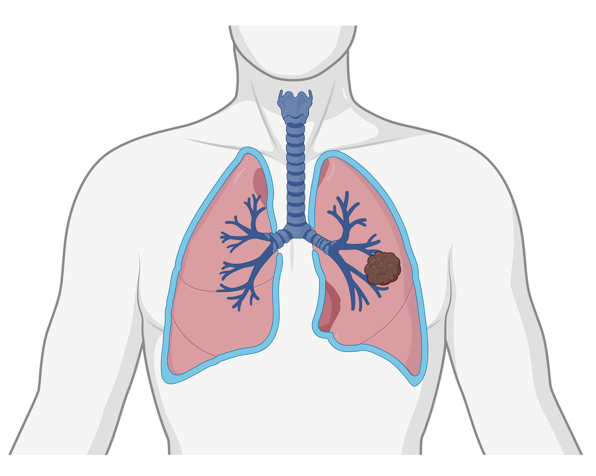

Question
Why do some patients respond?
We investigate the immune and stromal features that distinguish patients who respond to immune checkpoint inhibition from those who develop primary or acquired resistance.
Research track
Our lung cancer research program investigates how the spatial organization of tumor, immune, and stromal cells shapes disease progression, therapy response, and resistance in non-small cell lung cancer.
By combining deep spatial tissue profiling with molecular analysis and computational image analysis, we aim to identify clinically relevant mechanisms that can improve patient stratification and guide future treatment strategies.

Overview
Immune checkpoint inhibition has transformed the treatment landscape for advanced lung cancer, offering some patients the possibility of long-term survival. However, only a subset of patients benefit from current immunotherapies, and selecting the most effective treatment for each patient remains a major clinical challenge.
Our research focuses on the lung cancer microenvironment — the complex ecosystem of cancer cells, immune cells, stromal cells, and signaling interactions within patient tissue. Using deeply characterized clinical cohorts, we study how tissue architecture and molecular features are linked to tumor development, immune escape, treatment sensitivity, and resistance.
We evaluate patient samples using DNA and RNA sequencing together with advanced in situ technologies, including multiplex immune fluorescence, in situ sequencing, and proximity ligation assays. This allows us to connect molecular alterations with spatial cellular organization directly within the tissue context.
Question
We investigate the immune and stromal features that distinguish patients who respond to immune checkpoint inhibition from those who develop primary or acquired resistance.
Question
By mapping spatial patterns of immune infiltration, tumor growth, and stromal remodeling, we aim to understand how local tissue environments support or suppress anti-tumor immunity.
Question
Our goal is to identify interpretable diagnostic markers that support clinical decision-making and reveal new therapeutic opportunities for patients without actionable driver mutations or with therapy-resistant disease.
Approach

We generate multidimensional tissue data that capture immune cell densities, spatial patterns, cell-cell interactions, and signaling activity in lung cancer samples. These datasets provide a detailed view of the tumor microenvironment beyond conventional histopathology or bulk molecular profiling.
To analyze these complex data, we apply computational pipelines based on image analysis, spatial statistics, and deep learning. These methods allow us to quantify tissue architecture and extract biologically and clinically meaningful features from high-dimensional images.
A key part of our work is the development and application of proximity ligation assays to detect protein interactions directly in patient tissue. This enables spatial localization of immune checkpoint interactions, such as PD-1/PD-L1, and signaling pathway activation, such as PDGFRB/GRB2, at cellular resolution.
Impact
By integrating spatial, molecular, and clinical information, our research adds new diagnostic dimensions for understanding therapy response in lung cancer. These approaches may help explain why some patients benefit from immune checkpoint inhibition while others do not.
Beyond immunotherapy, spatial tissue analysis can provide valuable information for guiding targeted therapy, especially in patients without known driver mutations or in cases where resistance has developed.
Ultimately, our aim is to improve clinical diagnosis, support more precise therapy selection, and identify candidate targets for novel treatment strategies in lung cancer.
Selected publications
Nordling, Love; Backman, Max; Mezheyeuski, Artur; Lindblad, Joakim; et al.
Lindberg, Amanda; Hellberg, Louise; Grandon, Anaïs; Yu, Hui; et al.
Yu, Hui; Magoulopoulou, Anastasia; Amini, Rose-Marie; Chatzinikolaou, Maria Paraskevi; et al.
Lindberg, Amanda; Muhl, Lars; Yu, Hui; Hellberg, Louise; et al.